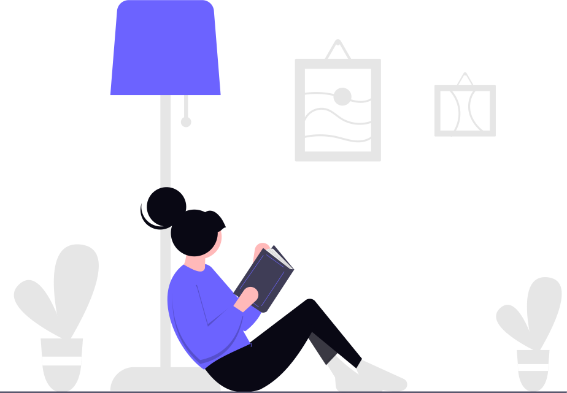
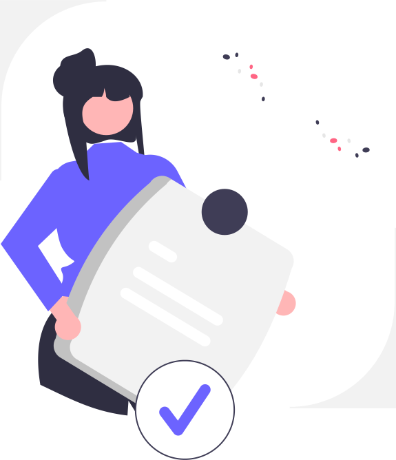
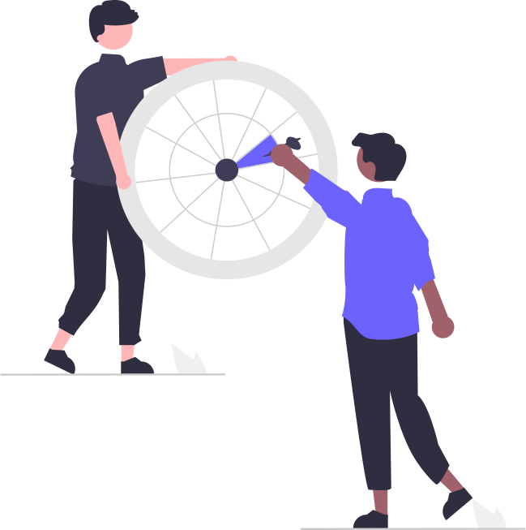
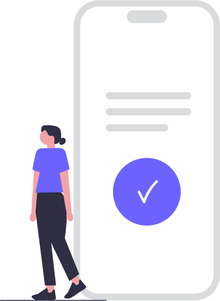

Learning Progress
Track your academic achievements and goal progress
This Week's Progress
Sept 16-22, 2024 • 7 days tracked

Study Time
3h 45m

Problems
28

Streak
5 days
Topics
7

Sessions
12
Learning Progress Charts
See how your learning is going over time
Tap chart for details
Swipe to navigate
Getting your progress ready...
Almost there! ✨
Swipe chart to explore data points
Data points: 7
Last updated: 2 min ago
Real-time updates
Goals Progress
Current learning goals performance • 3 active

Active
3

Completed
2
On Track
2

Avg Progress
68%
Next Steps
Click to take action
Continue working on Math - you're almost there!
12 of 20 problems completed (60%)
Try a quick Science session to maintain your streak
15 more minutes needed to reach your goal
Great progress on History - consider setting a new challenge
2 of 5 topics completed
Tip: Complete actions to unlock new achievements